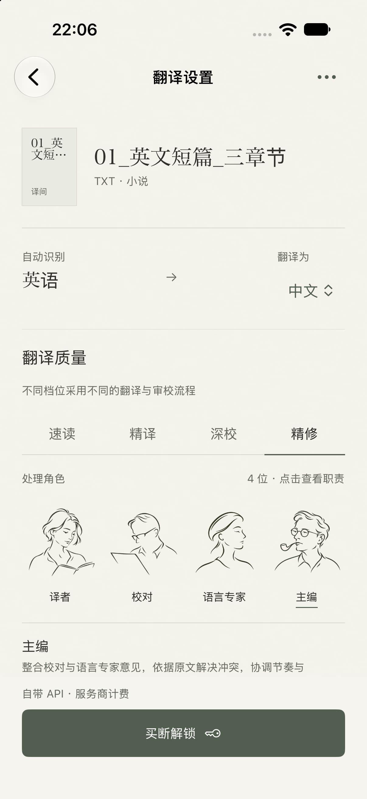
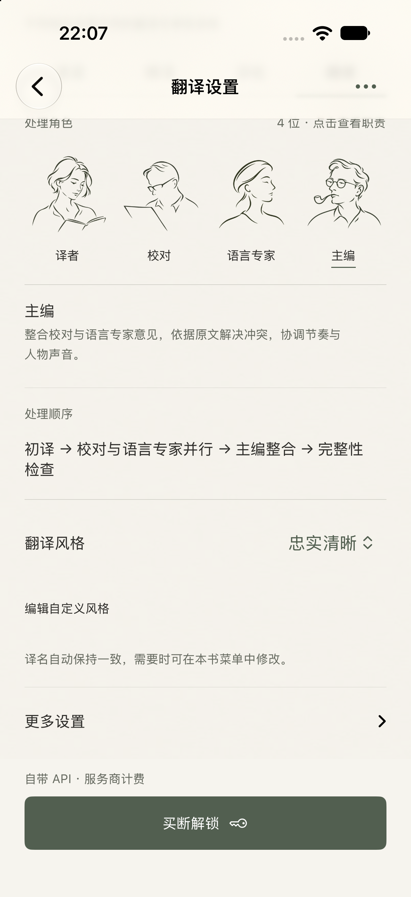
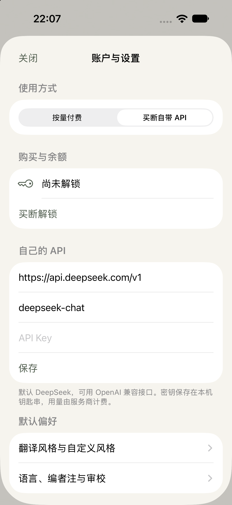
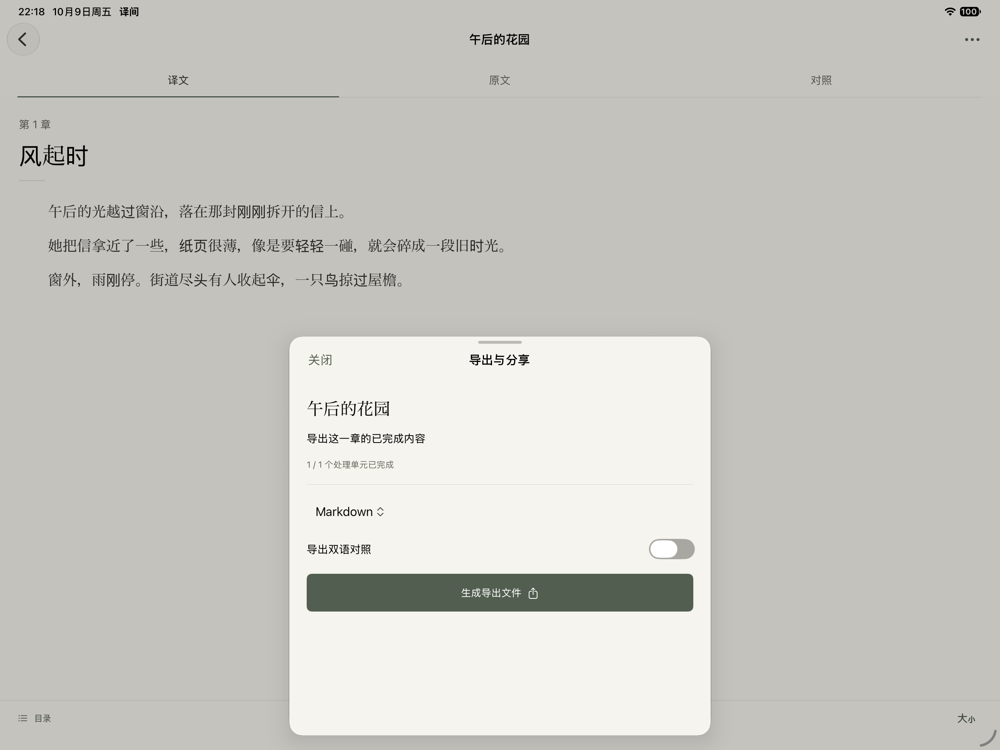
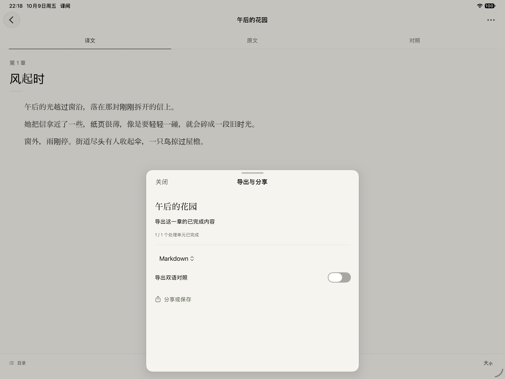

译间 / BookLLM · 原生 iOS 用户流程审查 · 2026-10-09
视觉方向统一，下一步的解释还需补齐
从书库、导入、翻译设置一路检查到进度、阅读、译名和导出。主要摩擦集中在开始前的费用与权益、未完成章节去哪了、修改及导出的实际范围。
本报告是审查与建议，尚未实施修复。P1：优先处理，会阻塞任务、造成范围误解或输入丢失风险；P2：影响选择、发现和阅读效率。
- 解释解锁与费用，给商品加载失败提供恢复路径。
- 目录展示全部已知章节；导出明确全书／当前章范围。
- 粘贴输入给出提示并保护草稿；译名生效范围在保存前完整可见。
- 简化设置首屏；改善阅读器空间及 iPad 内容宽度。
保留做得好的部分：书库首页、克制的纸面视觉、真实完成章节计数、并行阶段说明、边译边读、阅读返回本书进度，以及译名不重译历史正文的边界。
步骤 01 · 正常运行
书库找到下一步
基本清楚 · P2
有效之处
书库把文稿和真实状态放在一起，纸色、细线和字体形成统一阅读感。已有草稿提供“设置翻译”，下一步明确。
用户会困惑的地方
首次寻找导入时只有右上角“＋”；它与账户图标都需要猜。导入后书名沿用含下划线的文件名，识别成本较高。
建议
在已有文稿的书库中提供更易发现的“导入文稿”文字入口；保留加号供熟练用户使用。导入时允许确认显示名称。
无障碍风险与验证边界：图标的可见文字能帮助低视力和认知负担较高的用户；本轮没有进行完整 VoiceOver 操作。
步骤 02 · 正常运行
导入与粘贴
有摩擦 · P1 / P2
有效之处
“选择文件”和“粘贴文本”两条路线清楚，支持格式可见，空文本时禁止提交。
用户会困惑的地方
粘贴页的大块空白没有“在这里粘贴原文”提示，文稿名称也未说明是否必填。输入后关闭没有出现保存／放弃提示，长文本有丢失风险。导入半屏面板的 OCR 说明被省略号截断。
建议
增加原文输入提示与“名称（可选）”；有内容时保留临时草稿，或关闭前提供继续编辑／放弃。OCR 说明应能完整阅读。
无障碍风险与验证边界：截图04仅显示硬件键盘输入候选条，不代表软件键盘遮挡已验证。未提交新增文稿，未验证草稿恢复。

步骤 03 · 正常运行
选择翻译质量与风格
有摩擦 · P2
有效之处
四档选择与参与角色可见，人物和职责能表达翻译流程；更多设置采用收起方式。
用户会困惑的地方
“速读／精译／深校／精修”描述的是品质层级，首次使用仍难判断选哪档。角色职责占据首屏大部分空间，风格要继续滚动才看到。
建议
在档位下增加一句适用场景及真实的时间／用量差异说明；不要虚构准确率或耗时。把角色长职责折叠为可展开说明，给风格更早的位置。这是产品改进建议，当前顺序与交接规范一致。
无障碍风险与验证边界：小字号辅助文案和长职责需补测大字号；本轮只观察默认字号。


步骤 04 · 正常运行
解锁与使用方式
当前受阻 · P1
有效之处
界面如实说明自带 API 由服务商计费，账户页说明 Keychain 保存方式。
用户会困惑的地方
设置页主按钮变为“买断解锁”，附近没有解释买断包含什么、为何还需 API 费用，也没有就地切换使用方式。点击后只显示“商品暂不可用”，没有重试或原因说明。账户中 API 地址和模型主要依赖字段内容辨认，缺少持续可见的标签。
建议
在开始前明确当前使用方式、解锁权益及两类费用；提供“更改使用方式”。商品失败页保留权益说明，并提供重试与可用的返回路径。API 表单增加固定“服务地址／模型／API Key”标签，区分默认偏好与本书设置。
无障碍风险与验证边界：这是本次模拟器商品加载失败，不能据此认定真实商店或支付损坏。没有购买、恢复购买、登录或保存凭据。

步骤 05 · Debug 隔离样本
查看进度与暂停
基本清楚 · P2
有效之处
已完成 1/2 章、当前章节和角色阶段同时可见；校对与语言专家并行关系清楚。点击暂停后出现“已暂停”，状态没有伪装成已完成。
用户会困惑的地方
进度面板底部阅读很突出，但关闭面板、切到后台、暂停之间的区别未说明。完整性解释在默认首屏下方，用户可能只凭角色状态判断完成。
建议
保留真实章节计数与阶段；在必要位置用一句说明关闭面板与暂停的区别，明确后台行为。运行中始终给出可阅读章节范围。
无障碍风险与验证边界：只验证受控样本的阶段显示和暂停后的界面。未验证真实请求停止、付费检查点、恢复与扣点；“正在暂停”过渡未完整捕获。
步骤 06 · Debug 隔离样本
阅读与对照
基本顺畅 · P2
有效之处
原文／译文／对照入口稳定；中文正文清楚、留白舒适。阅读后返回确实恢复到本书进度面板。
用户会困惑的地方
从进度进入的阅读器仍在约88%高度的面板内，顶端露出书库，占用阅读空间。对照按已知处理分块排列，长块内原文和译文之间缺少显式文字标识，定位需要多扫视。
建议
让阅读使用完整可用屏幕，返回仍恢复进度和位置；在对照块中增加轻量“原文／译文”标识。继续使用可靠分块边界，不猜造逐句对应。
无障碍风险与验证边界：没有在真实长书、流式更新、回看和字号切换下验证位置稳定性；截图中的弱化原文需要进一步量测对比度。
步骤 07 · Debug 隔离样本
目录选择章节
容易误解 · P1
有效之处
已完成章节可以进入阅读，符合边译边读的方向。
用户会困惑的地方
阅读器显示“第1/2章”，目录却只列出已完成的 Chapter I。第二章完全不出现，容易让人以为解析漏章，目录也未标注当前章或完成状态。
建议
列出全部已知章节，明确标注“当前／可阅读／翻译中／未开始”；未完成章节保留位置与状态说明，限制正文打开。
无障碍风险与验证边界：完整章节名及状态有助于屏幕阅读器用户理解全书结构；本轮未实测 VoiceOver 焦点顺序。
步骤 08 · Debug 隔离样本
修改译名
边界清楚，提示需改善 · P1
有效之处
列表按原词与译名成对显示，入口可选；明确说修改不会重译旧章节或额外扣点。
用户会困惑的地方
编辑半屏中，“之后哪些内容生效”的关键说明未在默认视图完整显示，且“已冻结／原快照／处理单元”需要理解内部机制。用户容易期待保存后全书立刻统一。
建议
把生效范围放在输入框下方、保存前完整可见；用“用于之后新开始翻译的内容；已完成及正在处理的内容保持原译名”解释，并保持真实请求边界。
无障碍风险与验证边界：关键提示可滚动到达，但不应要求用户自行发现。未保存译名，未在本轮验证持久化、失败重试或线上请求。


步骤 09 · Debug 隔离样本 / iPad
导出与分享
范围易误解 · P1
有效之处
格式与双语开关清楚；生成本地 Markdown 后按钮变为“分享或保存”，有可见反馈。
用户会困惑的地方
从书库的“导出”会先进入阅读器；已完成两章的书默认第1章。导出面板因此写“导出这一章的已完成内容”，没有全书／当前章范围选择。“1/1个处理单元”也与用户的章节心智不一致。
建议
导出页明确提供范围：全书已完成内容／当前章／选择章节；书库入口优先全书，阅读器入口可默认当前章。按钮前显示实际章节数与范围；生成后保留清楚的成功状态和主操作样式。
无障碍风险与验证边界：只验证隔离样本本地生成反馈；没有打开系统分享、保存到外部位置、发布或交易，未再次回读文件内容。




步骤 10 · Debug 隔离样本
iPad 横屏使用
布局有改进空间 · P2
有效之处
主要入口仍能操作，纸色和内容结构一致。
用户会困惑的地方
书库行拉满宽屏，书名、状态集中在左侧，操作离得很远；细进度条也延伸到整屏。横屏阅读正文横向跨度过大，难保持视线回行。
建议
书库与阅读分别设合理最大内容宽度并居中；维持操作与内容的接近关系。先改善宽度和分组，不必为此增加全局导航。
无障碍风险与验证边界：只检查13英寸iPad横屏默认字号；未检查分屏、Stage Manager、多窗口与大字号。

证据范围
20张本轮原生设备截图；iPhone 18 Pro（402×874 pt）竖屏与 iPad Pro 13-inch（M5）横屏，iOS／iPadOS 27.0 Simulator。使用已运行的设备和已对应最新源代码的构建，未重新 clean 或构建。
01–08来自正常书库及正常入口。09–20来自现有 Debug 独立缓存样本，采用受控等待的模型提供器观察状态；没有真实模型或支付调用。暂停仅影响隔离样本；没有清空书库、Keychain或模拟器，没有改动业务代码。
正常路线在商品不可用处受阻。首次安装引导、真实 Apple 登录、支付、在线翻译及恢复、各格式系统文件导入、扫描／混合 PDF 核对、已购译本和发布交易没有在本轮验证。软件键盘、窄屏、大字号、减少动态效果、完整 VoiceOver 与真机未在本轮验证。截图只能支持可见风险，不能证明无障碍全面合规。
本轮未运行自动化测试；此前160项通过属于历史记录。未把夹具、按钮反馈或历史测试作为本轮真实服务成功的证据。
截图中硬件输入法产生的测试文字不用于评判应用内容。设备窗口曾被其他应用操作切换，已剔除错误／过渡截图，只保留译间稳定界面。